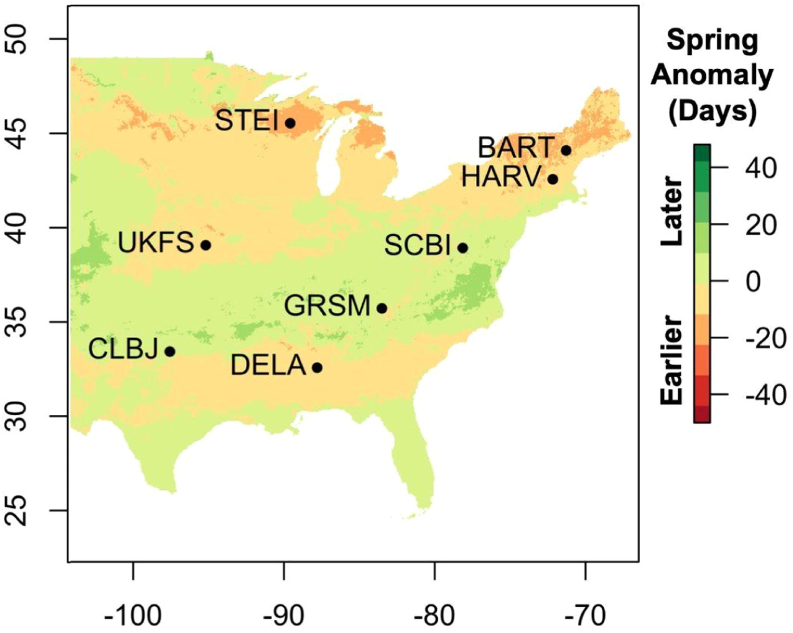
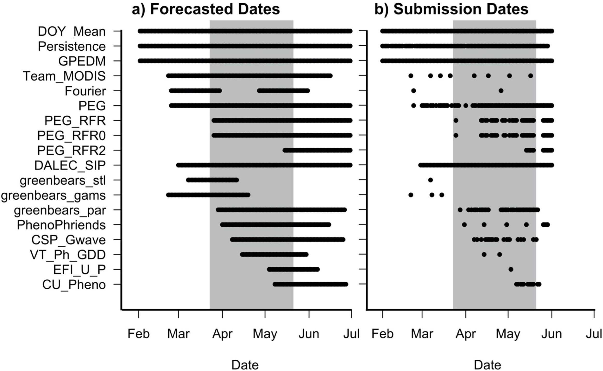
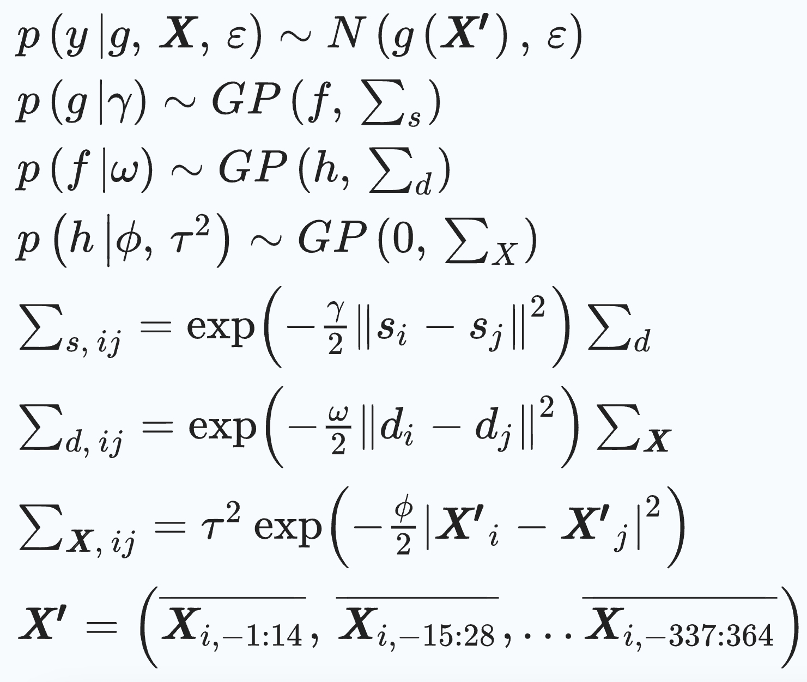
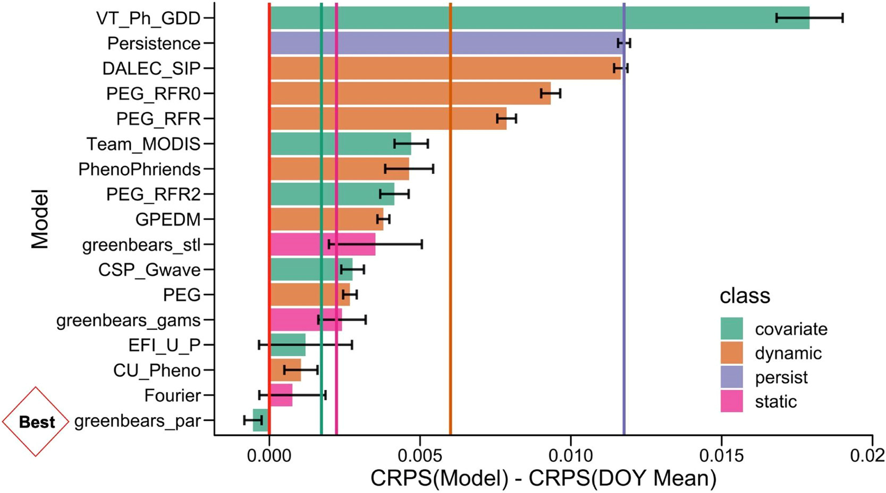
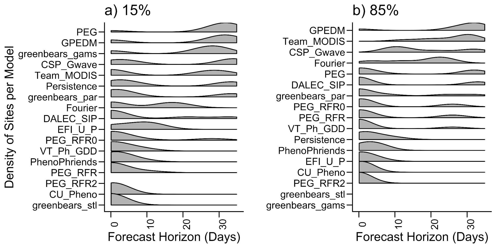

We participated in a community forecast challenge to predict daily plant greenness with our model GPEDM out of 18 models.
Forecasts across teams showed that historical means of greenness on each day of year were difficult to outperform.
GPEDM had the best performance among similar models that are data-driven, dynamic (includes previous state), and use covariates.
For the study sites, several static models or models without covariates had better performances than GPEDM in predicting greenness values.
GPEDM showed its advantage in accurately predicting the ecologically important greenup transition dates.
The forecasting challenge

Locations of selected sites and the National Phenology Network's Historical Annual Spring Indices Anomaly for First Leaf product during the study year of 2021 compared to the 1991–2020 average.

The specific days that each model forecasted and the days that each team submitted forecasts on.
Our model

Gaussian Process time-delay embedding model with a spatial covaraince function layer and a temporal covariance function layer (Sugihara et al., 2012).
Exmaple of forecasts
An example of forecasted greenness values (GCC) submitted by teams on 11 May 2021 for Harvard Forest, with PhenoCan images on dates of 15% and 85% greenup.
Model evaluation

Mean predictive skill by model relative to the day of year (DOY) Mean null model.
"for the 15 %, 50 %, and 85 % greenup transition dates, PEG, GPEDM, and greenbears_gams beat the DOY Mean model furthest out"

Forecast horizon, or number of days before the transition dates that each forecast model did better at forecasting greenness (GCC) than day of year mean model across the range of all sites.